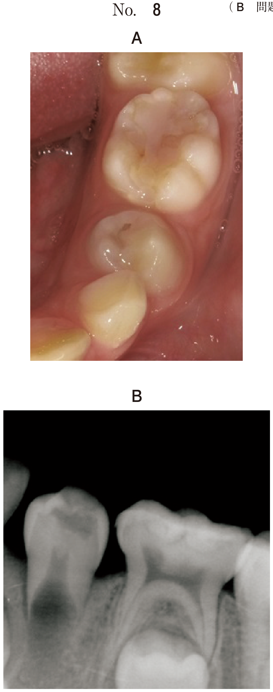

外骨症（exostosis）は、局所の骨質の過剰発育によって生じる非腫瘍性の骨性膨隆である。青少年期以降に発現し、加齢とともに増大する傾向がある。腫瘍ではなく、通常は無症状で治療を要しない。
| 種類 | 好発部位 | 臨床所見 |
|---|---|---|
| 口蓋隆起 （torus palatinus） |
硬口蓋正中部 | 口蓋骨正中縫合の限局性骨増殖。紡錘形・結節状・扁平型・分葉型がある。正常粘膜に覆われ、骨様硬 |
| 下顎隆起 （torus mandibularis） |
下顎小臼歯部舌側 | 半球形の骨隆起。しばしば左右対称性に生じる。単発または多発性。正常粘膜に覆われ、骨様硬 |
| 外骨症（骨隆起） | 骨腫（osteoma） | |
|---|---|---|
| 本態 | 骨の過剰発育（反応性） | 良性腫瘍 |
| 好発部位 | 口蓋正中・下顎小臼歯舌側（典型的部位に限局） | 任意の部位（下顎骨体部・下顎角部など） |
| 多発性 | あり得る（左右対称性が多い） | 通常単発（多発はGardner症候群を疑う） |
| 治療 | 機能障害時のみ切除 | 外科的切除 |
注意：口蓋隆起上の粘膜は菲薄であるため、剥離時の穿孔や術後の創離開に注意。大口蓋動脈・大口蓋神経の走行にも配慮する。
骨隆起の部位によって、損傷に注意すべき構造が異なる。
| 構造物 | 走行・位置 | 損傷時の障害 |
|---|---|---|
| 舌神経 | 下顎骨舌側の骨膜直上を走行。第三大臼歯部で骨面に最も近接し、小臼歯部でも舌側軟組織内を走行 | 舌前2/3の知覚麻痺・味覚障害 |
| Wharton管 （顎下腺管） |
口腔底を前内方に走行し、舌下小丘に開口 | 唾液の排出障害、顎下腺腫脹 |
判断基準：手術部位が「舌側」→ 舌側を走行する構造物のみが損傷リスク対象
| 構造物 | 位置・走行 | 臨床的注意 |
|---|---|---|
| 大口蓋動脈・大口蓋神経 | 大口蓋孔から前方に走行。硬口蓋の外側寄り | 切開・剥離時に損傷すると出血。Y字切開で正中から剥離すれば回避可能 |
| 鼻口蓋神経 | 切歯管を通って硬口蓋前方に分布 | 前方のY字切開端で注意 |
口蓋隆起が大きい場合、粘膜が菲薄化しており術後の創傷治癒が遅延しやすい。
| Stensen管（耳下腺管） | Wharton管（顎下腺管） | |
|---|---|---|
| 由来腺 | 耳下腺 | 顎下腺 |
| 開口部 | 頬粘膜（上顎第二大臼歯対合部の耳下腺乳頭） | 舌下小丘（口腔底前方正中付近） |
| 走行 | 咬筋表面 → 頬筋を貫通 | 口腔底を前内方に走行 |
| 下顎隆起切除との関係 | 無関係（頬側） | 損傷リスクあり（舌側・口腔底） |
62歳の男性。下顎の腫脹を主訴として来院した。10年前から気付いていたが痛みがないためそのままにしていたところ、最近受診した近医で精査を勧められたという。腫脹部は骨様硬で圧痛はない。診断をした結果、切除することとした。初診時の口腔内写真（別冊No.12)を別に示す。術中損傷に注意すべきなのはどれか。2つ選べ。

【診断の根拠】10年の経過、骨様硬、圧痛なし、下顎（写真から小臼歯部舌側に左右対称性の骨性膨隆）→ 下顎隆起（外骨症）。
【解説】下顎隆起の切除では舌側の軟組織を操作するため、舌側を走行する舌神経（a）と口腔底のWharton管（d）の損傷に注意する。舌下神経（b）は深部を走行し通常損傷しない。Stensen管（c）は耳下腺管であり頬粘膜に開口するため無関係。オトガイ神経（e）はオトガイ孔から頬側に出る神経で舌側操作では損傷しない。